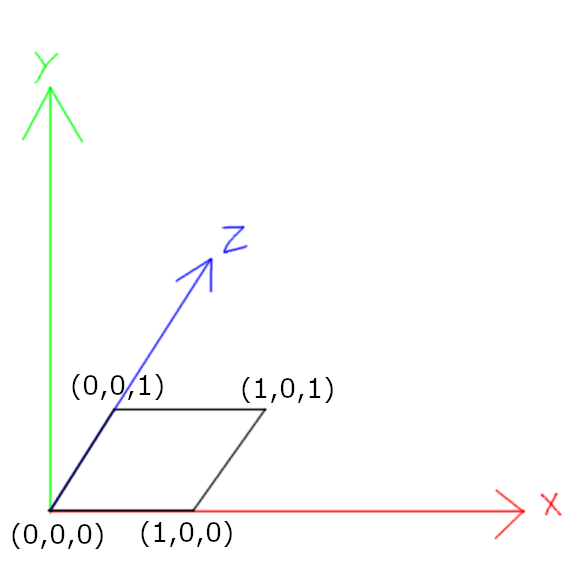
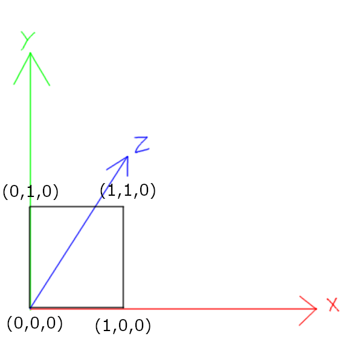
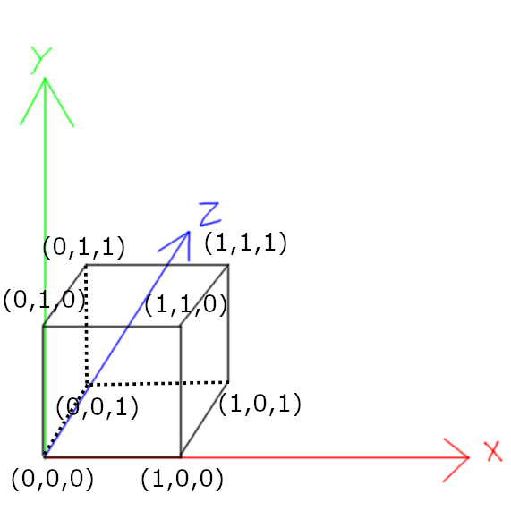
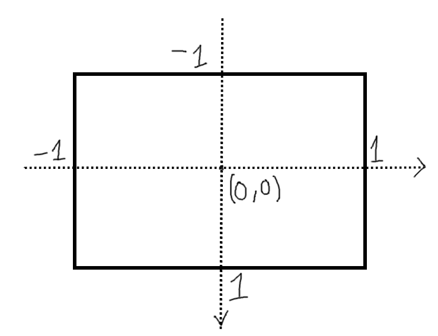

Những khái niệm cơ bản
1. Hệ tọa độ Descartes
 Không cần vòng vo gì nhiều, hệ tọa độ này chính là cái mà bạn đã học trong suốt 12 năm học, còn
nếu bạn muốn tìm hiểu thêm thì mình đã có link tới Wikipedia ở trên. Tuy nhiên, có
một điểm mà bạn cần lưu ý là, đối với Game và đa số các phần mềm đồ họa 3D, thì trục hướng lên là
trục y
chứ không phải trục z như trong toán học, và có chia ra làm 2 loại hệ tọa độ: Tay trái và tay phải,
mình thì quen hệ tọa độ tay trái hơn, lúc đó trục z sẽ hướng ra xa mình, trục x sẽ hướng sang phải,
và trục y sẽ hướng lên trên.
Không cần vòng vo gì nhiều, hệ tọa độ này chính là cái mà bạn đã học trong suốt 12 năm học, còn
nếu bạn muốn tìm hiểu thêm thì mình đã có link tới Wikipedia ở trên. Tuy nhiên, có
một điểm mà bạn cần lưu ý là, đối với Game và đa số các phần mềm đồ họa 3D, thì trục hướng lên là
trục y
chứ không phải trục z như trong toán học, và có chia ra làm 2 loại hệ tọa độ: Tay trái và tay phải,
mình thì quen hệ tọa độ tay trái hơn, lúc đó trục z sẽ hướng ra xa mình, trục x sẽ hướng sang phải,
và trục y sẽ hướng lên trên.
2. Tam giác
Chắc cái này bạn đã từng nghe qua, tất cả mọi thứ trong đồ họa 3D đều được làm từ nhiều hình tam giác ghép lại với nhau, và nó đúng là như vậy, đơn giản chỉ là vì tam giác là hình dạng cơ bản nhất mà bạn có thể tạo được từ các điểm và đường. Sau đây mình sẽ demo với một hình lập phương đơn giản, hình lập phương được tạo thành từ 6 mặt phẳng, mỗi mặt phẳng đó sẽ được tạo thành từ 2 tam giác, mình sẽ gọi 6 mặt phẳng đó là TOP, DOWN, FRONT, BACK, LEFT và RIGHT. Trước tiên đối với 4 đỉnh của mặt phẳng DOWN, FRONT và LEFT:



Đối với TOP, BACK và RIGHT thì nó chỉ là như DOWN, FRONT và LEFT nhưng với y, z, x = 1 thay vì 0.
Như vậy hình lập phương đầy đủ của chúng ta sẽ có 8 đỉnh như sau:

Sau đó ta bắt đầu cắt 6 mặt phẳng của hình lập phương thành các tam giác, mỗi mặt phẳng sẽ có 2 tam
giác:
 Đối với mặt FRONT, ta có 2 tam giác là [(0,1,0), (1,1,0), (1,0,0)] và [(0,1,0), (1,0,0), (0,0,0)],
lưu ý là
thứ tự các đỉnh liệt kê trong tam giác phải thống nhất cùng chiều kim đồng hồ hay ngược chiều kim
đồng hồ,
điều này khá quan trọng, ta sẽ nói về điều này sau.
Đối với mặt FRONT, ta có 2 tam giác là [(0,1,0), (1,1,0), (1,0,0)] và [(0,1,0), (1,0,0), (0,0,0)],
lưu ý là
thứ tự các đỉnh liệt kê trong tam giác phải thống nhất cùng chiều kim đồng hồ hay ngược chiều kim
đồng hồ,
điều này khá quan trọng, ta sẽ nói về điều này sau.
 Tương tự, đối với cả hình lập phương, ta sẽ có tất cả 12 tam giác như sau:
Tương tự, đối với cả hình lập phương, ta sẽ có tất cả 12 tam giác như sau:
[// FRONT
{{0,1,0}, {1,1,0}, {1,0,0}},
{{0,1,0}, {1,0,0}, {0,0,0}},
// RIGHT
{{1,1,0}, {1,1,1}, {1,0,1}},
{{1,1,0}, {1,0,1}, {1,0,0}},
// BACK
{{1,1,1}, {0,1,1}, {0,0,1}},
{{1,1,1}, {0,0,1}, {1,0,1}},
// LEFT
{{0,1,1}, {0,1,0}, {0,0,0}},
{{0,1,1}, {0,0,0}, {0,0,1}},
// TOP
{{0,1,1}, {1,1,1}, {1,1,0}},
{{0,1,1}, {1,1,0}, {0,1,0}},
// BOTTOM
{{1,0,1}, {0,0,1}, {0,0,0}},
{{1,0,1}, {0,0,0}, {1,0,0}}] Và 12 tam giác cuối cùng sẽ là:
Và 12 tam giác cuối cùng sẽ là:
[// FRONT
{{-0.5,0.5,-0.5}, {0.5,0.5,-0.5}, {0.5,-0.5,-0.5}},
{{-0.5,0.5,-0.5}, {0.5,-0.5,-0.5}, {-0.5,-0.5,-0.5}},
// RIGHT
{{0.5,0.5,-0.5}, {0.5,0.5,0.5}, {0.5,-0.5,0.5}},
{{0.5,0.5,-0.5}, {0.5,-0.5,0.5}, {0.5,-0.5,-0.5}},
// BACK
{{0.5,0.5,0.5}, {-0.5,0.5,0.5}, {-0.5,-0.5,0.5}},
{{0.5,0.5,0.5}, {-0.5,-0.5,0.5}, {0.5,-0.5,0.5}},
// LEFT
{{-0.5,0.5,0.5}, {-0.5,0.5,-0.5}, {-0.5,-0.5,-0.5}},
{{-0.5,0.5,0.5}, {-0.5,-0.5,-0.5}, {-0.5,-0.5,0.5}},
// TOP
{{-0.5,0.5,0.5}, {0.5,0.5,0.5}, {0.5,0.5,-0.5}},
{{-0.5,0.5,0.5}, {0.5,0.5,-0.5}, {-0.5,0.5,-0.5}},
// BOTTOM
{{0.5,-0.5,0.5}, {-0.5,-0.5,0.5}, {-0.5,-0.5,-0.5}},
{{0.5,-0.5,0.5}, {-0.5,-0.5,-0.5}, {0.5,-0.5,-0.5}}]3. Màn hình
Đối với Game, thì người ta thường hay chuẩn hóa màn hình về giá trị từ -1 đến 1 theo cả 2 chiều x và y, cụ thể là điểm (-1, -1) sẽ nằm ở góc trái trên, điểm (1, 1) sẽ nằm ở góc phải dưới, và điểm (0, 0) sẽ nằm ở chính giữa.  Hệ thống trên mặc định là màn hình nào cũng là hình vuông, nhưng ta biết là làm gì có màn hình nào là hình vuông, chỉ có hình chữ nhật thôi, nên trước tiên ta phải để ý tới tỉ lệ khung hình (aspect ratio) của màn hình (tính bằng cách lấy chiều rộng (w) chia cho chiều cao (h)). Như vậy, để thể hiện đúng điểm \((x, y, z)\) trên màn hình, trước tiên ta phải áp dụng tỉ lệ khung hình vào tọa độ x: \((x*\frac{h}{w}, y, z)\).4. FOV
Chắc bạn cũng đã biết FOV (Field of view) là tầm nhìn của mắt người hay camera trong game, fov càng lớn, càng nhìn được rộng. Cụ thể hơn, trong game cũng như ngoài đời, mắt mình nhìn thế giới theo hình chóp cụt (frustum), 2 hình sau đại diện cho tầm nhìn của mình khi nhìn từ trên xuống và nhìn từ ngang qua:

Nếu bạn để ý, \(θ\) là góc ở hình thứ 2 chứ không phải hình thứ 1, vì ta đang sử dụng vertical FOV để tính toán, và hầu hết game nào cũng sử dụng vertical FOV để tính toán cả (có mục đích hết, google để tìm hiểu thêm), điều này không hề được nhắc tới trong video của javidx9 btw.